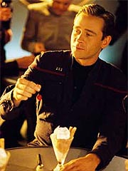
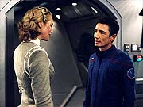
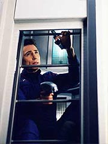
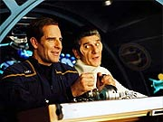

|
MANCHETE
DO EPISDIO
Excelente
drama mais uma vez
explora o tema 'Primeira Diretriz'
Episdio
anterior | Prximo
episdio
Sinopse:
A Enterprise inicia o estudo de uma estrela hipergigante que deve se tornar supernova em 100 ou 200 anos -- a primeira vez que uma nave da Terra estuda um astro desses in loco. Enquanto Archer est maravilhado com a vista, Hoshi alerta para a presena de uma nave mais prxima fotosfera da estrela. Archer contata os aliengenas e descobre que eles tambm so exploradores, e tambm esto estudando a estrela.
A convite do capito, os Vissianos vm a bordo, onde rapidamente um bom relacionamento se estabelece entre os anfitries e os convidados. Malcolm Reed parece se "entrosar" com a oficial ttica Vissiana, e Trip Tucker tem a chance de aprender com o engenheiro-chefe da nave aliengena, que possui tecnologia largamente superior da Enterprise.
 Durante a recepo no refeitrio da Enterprise, Trip fica surpreso ao descobrir que os Vissianos tm trs sexos. Alm de homens e mulheres, h os cogenitores, seres que so requeridos apenas para viabilizar a reproduo. Ao perceber que essas criaturas, em tudo similares aos demais Vissianos, so tratadas como meros objetos, Trip fica crescentemente incomodado.
O engenheiro da Enterprise vai ento ao encontro de Phlox, procurando mais informaes sobre os Vissianos e seus cogenitores. O mdico no realizou estudos neurolgicos dos aliengenas quando eles vieram a bordo, mas com a ajuda de Trip ele obteve as leituras necessrias para mostrar que, intelectualmente, cogenitores tm as mesmas capacidades que os membros dos outros dois sexos.
Isso faz com que Trip fique ainda mais motivado a contatar o cogenitor, que aos olhos dele parece "ela", para estimular seu desenvolvimento social e intelectual. Em conversa com T'Pol, a Vulcana deixa claro que o engenheiro no deveria interferir com os costumes da civilizao aliengena, ainda mais tendo em vista o interesse do capito em aprofundar os laos de amizade entre humanos e Vissianos.
Enquanto isso, Archer tem a oportunidade de uma vida: ele convidado para visitar, acompanhado pelo capito Vissiano, a fotosfera da estrela, numa cpsula especialmente resistente desenvolvida pelos aliengenas. Sem hesitao, o humano aceita, e o entrosamento dos dois capites entusiasmante. Ambos realizam diversos estudos da atmosfera e da superfcie solar, obtendo imagens espetaculares.
Na nave Vissiana, Trip decide contrariar as recomendaes de T'Pol e visitar o cogenitor, traindo a confiana do engenheiro-chefe aliengena e sua mulher. Aos poucos, Trip consegue convencer o cogenitor de que ele deve ter direitos e aspiraes. Ensina-o a ler, o que no toma mais que um dia. Contrariando as ordens, o engenheiro o leva para um tour pela Enterprise.
Quando suas aes so descobertas, Trip fortemente repreendido por T'Pol. O cogenitor, em compensao, impedido de perseguir suas aspiraes na nave Vissiana, o que o leva a pedir asilo na Enterprise. Quando Archer retorna nave, informado da presente crise. A deciso difcil, mas o capito da Enterprise julga que a melhor coisa a fazer negar o pedido e devolver o cogenitor nave Vissiana. As duas naves partem em seus caminhos.
 Archer se sente culpado pelas atitudes de Trip, supostamente por no ter dado um bom exemplo e no ter sido suficientemente inflexvel no que diz respeito interferncia com outras culturas no passado. Mesmo assim, ele repreende fortemente o engenheiro. E o clima s piora na Enterprise quando Archer recebe uma comunicao da nave Vissiana. O cogenitor est morto. Suicdio.
Comentrios:
engraado como s vezes os episdios de que menos se espera mais rendem.
"Cogenitor" conseguiu fazer algo que Enterprise ainda no tinha sido capaz de realizar at agora: drama.
No drama estereotipado, no obviedade, no amenidade. Drama real. Daqueles que incomodam a audincia, fazem ela pensar. De todos os episdios feitos at agora na srie, esse foi o que mais teve sucesso em produzir esse tipo de impacto.
Para comear, ele procura no se estruturar no bvio. Explico com um exemplo: quando Trip oferece um tour para o cogenitor a bordo da
Enterprise, a audincia (eu includo) tem a certeza de que ele vai ser pego. A cada cena, esperamos encontrar T'Pol ou um dos Vissianos na prxima esquina da nave, fazendo um escndalo e chamando para o comercial. Essa seria a soluo bvia.
 Os roteiristas (Brannon Braga e Rick Berman --vamos dar crdito quando eles merecem) sabem muito bem que o pblico est ciente de que esse o prximo passo lgico. O que eles fazem? Evitam a frmula e simplesmente saltam para T'Pol repreendendo Trip por ter trado a confiana dos aliengenas. Com isso, no s quebram a expectativa da audincia (embora mantenham o fluxo lgico da histria), como evitam o tradicional clich da cena "peguei no flagra".
Alm disso, e mais importante, o episdio consegue capturar o impacto desastroso que a interferncia em outras culturas pode trazer. No em termos grandiosos, mas psicologicamente poderosos. A noo de que Trip fez com que o cogenitor cometesse suicdio ao tentar na verdade ajud-lo a realizar seu potencial dramaticamente mais forte do que qualquer outra baguna que Archer tenha feito com outras civilizaes e rivaliza com o incio de
"Shockwave, Part I", com a diferena de que aqui a desgraa surge no final do episdio, deixando o telespectador ainda mais incomodado (e satisfeito).
Outros toques tambm so igualmente trabalhados, como a mudana gradual de perspectiva da tripulao da Enterprise frente ao espao. Archer deixou a Terra no incio da temporada com a idia de realizar contatos pacficos e de mtuo interesse com outras civilizaes espalhadas pela galxia. Conforme mais e mais combates foram adicionados lista do capito, ele passou a ser desconfiado de cada novo primeiro contato. Quando surge uma civilizao genuinamente pacfica, ele demora a retornar ingenuidade que o levou ao espao em primeiro lugar. interessante ver como seu contato com o capito Vissiano gradativamente traz de volta esse esprito de explorador e astronauta ao capito da Enterprise.
As atuaes so todas excelentes. H cenas engraadas que realmente funcionam (o que raro num roteiro de Berman & Braga), como a em que a oficial Vissiana passa uma cantada em Malcolm Reed, sugerindo que ele mostre a ela seu "conjunto ttico", ao que ele responde que s mostra o dele se ela mostrar o dela. Tambm boa a breve cena em que Phlox parece animado por apresentar a Trip imagens de como o relacionamento sexual acontece entre os Vissianos.
No lado dramtico, as atuaes so igualmente marcantes. Os atores convidados conseguem imprimir um grau de realismo cultura Vissiana, um tom de "real diferena", em vez de simplesmente "tirania contra o cogenitor", o que torna o episdio ainda mais interessante --definir claramente o que certo e o que errado aqui no das tarefas mais simples, nem mesmo para a audincia.
 O grande trio, Trip, T'Pol e Archer, desenvolve uma relao interessante aqui. O antagonismo entre a Vulcana e o engenheiro atinge um novo patamar, que no envolve mais a picuinha entre aliengenas, mas sim a personalidade de cada um. Trata-se da impulsividade de Trip versus a lealdade de T'Pol, um conflito psicolgico muito mais forte do que simplesmente a picuinha humano/Vulcano.
Connor Trinneer continua imprimindo a simpatia e a honestidade de sempre ao engenheiro Trip. Blalock no tem desafios a enfrentar em suas cenas. O maior desafio do episdio talvez tenha recado sobre Scott Bakula, que consegue imprimir grande emotividade ao capito Archer. O ator tem talento suficiente para reunir todos os sentimentos conflitantes do capito num personagem coerente.
H quem diga que ele est descaracterizado, por ter repreendido Trip em algo que ele mesmo poderia ter feito. Mas justamente essa constatao que ele faz e que to devastadora: Trip agiu exatamente segundo o exemplo de seu capito. Archer agora percebe o quo importantes so suas aes, no s no mbito das civilizaes aliengenas, mas tambm em meio a sua tripulao. Bakula consegue trazer flor da pele as emoes do capito, numa grande atuao.
Se alguma crtica for pertinente a esse episdio, talvez seja no ritmo. As cenas de Archer com o capito Vissiano no interior da estrela so muitas, repetitivas e com pouco contedo. Embora seja um prazer ver uma atuao qualificada como a do ator Andreas Katsulas, o valor dessas cenas est na ps-produo. As tomadas externas da cpsula navegando pelas exploses solares so simplesmente espetaculares! Tambm so entusiasmantes, embora discretas, as tomadas na engenharia aliengena, com seu motor de dobra totalmente criado por computador. Os valores de produo continuam em alta na srie.
No fim das contas, em meio a uma temporada recheada de episdios medianos,
"Cogenitor" um que se destaca. Mas seria injusto justific-lo apenas em razo de seus contrapartes de
Enterprise. Trata-se de um segmento que poderia sobreviver entre os melhores em qualquer uma das sries de
Jornada. Se mais roteiros fossem assim, haveria menos insatisfeitos com o reinado de Berman & Braga...
Citaes:
Tucker - "Itll be nice to have a first contact where nobody is thinking about charging weapons."
("Ser bom ter um primeiro contato em que ningum est pensando em carregar armas.")
Phlox - "Keep an open mind, commander, you came on this mission to meet other species, no matter how many genders they may have."
("Mantenha a mente aberta, comandante, voc veio nessa misso para conhecer outras espcies, no importa quantos sexos ela tenha.")
Trivia:
 Andreas Katsulas conhecido como o Romulano Tomalak, que apareceu em quatro episdios de A Nova Gerao. Ele tambm interpretou o embaixador G'Kar, em "Babylon 5".
Andreas Katsulas conhecido como o Romulano Tomalak, que apareceu em quatro episdios de A Nova Gerao. Ele tambm interpretou o embaixador G'Kar, em "Babylon 5".
F.J. Rio tambm j participou de Jornada antes, interpretando Muniz em trs episdios de
Deep Space Nine e Joleg em "Repentance" (Voyager). Laura Interval apareceu como a me de Seven of Nine, Erin Hansen, em
"Dark Frontier" (Voyager), mas foi creditada como Laura Stepp.
As filmagens principais ocorreram de 18 a 26 de fevereiro de 2003.
o terceiro episdio dirigido por LeVar Burton (Geordi La Forge) em
Enterprise, depois de "Terra Nova" e
"Fortunate Son".
Rick Berman comentou: "[Esse episdio] lida com uma espcie que tem trs sexos necessrios para a concepo. O episdio se concentra em Trip, e eu acho que um episdio muito provocativo que lida com as questes precursoras da Primeira Diretriz."
Ficha
tcnica:
Escrito por Rick Berman & Brannon
Braga
Direo de LeVar Burton
Exibido em 30/04/2003
Produo:
048
Elenco:
Scott
Bakula como Jonathan Archer
Jolene Blalock como
T'Pol
John Billingsley
como Phlox
Anthony Montgomery
como Travis Mayweather
Connor Trinneer como
Charlie 'Trip' Tucker III
Dominic Keating como
Malcolm Reed
Linda Park como Hoshi Sato
Elenco convidado:
Andreas Katsulas como capito Vissiano
F.J. Rio como engenheiro Vissiano
Larissa Laskin como Calla
Becky Wahlstrom como Cogenitor
Stacie Renna como Traistana
Laura Interval como mulher Vissiana 2
Episdio
anterior | Prximo
episdio
|